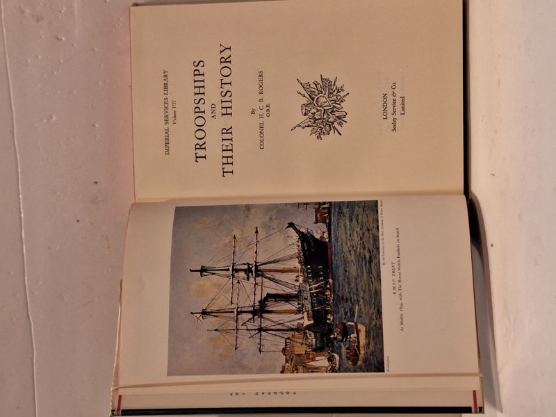

Troopships and their History
Colonel H. C. B. Rogers · Seeley Service & Co Ltd, London, 1963

C$25 · Very Good condition
First UK edition (Seeley Service & Co Ltd, London, 1963), part of the Imperial Services Library, Volume VII. Hardcover with original unclipped dust jacket. Color frontispiece showing a sailing troopship; black-and-white illustrations throughout. 223 pages. Jacket shows light edge wear; boards clean with minimal shelfwear; tight binding; no foxing or prior-owner marks.
Details
- Publisher: Seeley Service & Co Ltd, London, 1963
- Binding: Hardcover
- Edition: First Edition
- Condition: Very Good
- Dust jacket: Very Good
- Category: Military